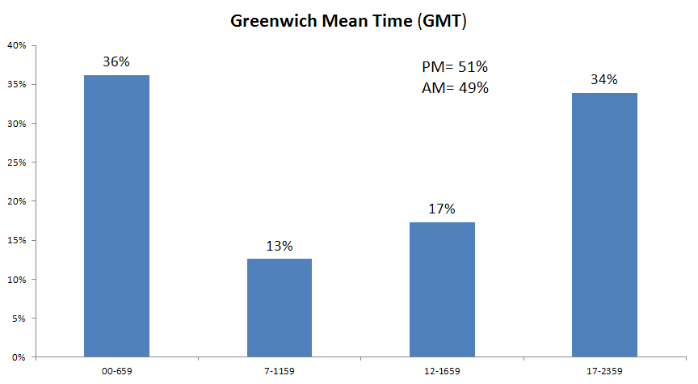
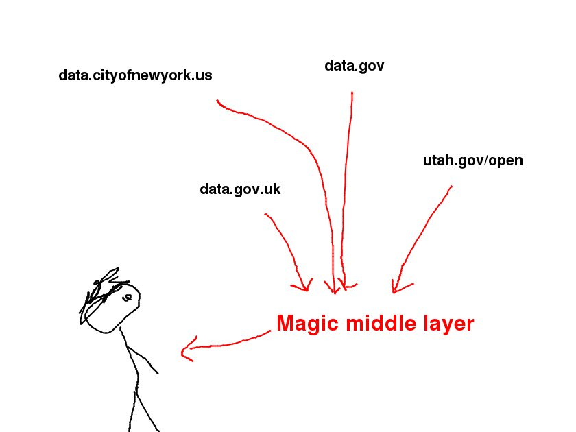

100,000 open data across 100 portal
Here are some materials for my talk at NYC Open Data, but they’re written in normal language, so they’ll probably serve as a decent summary of my work thus far to people who are reading this on the internet.
Schedule
The schedule for the talk will go sort of like this
- 7:00 to 7:50 I’ll talk about what I did
- 7:50 to 8:00 Questions about what I did
- 8:00 to 8:10 Introduce the exercises
- 8:10 to 8:45 Work on the exercises
- 8:45 to 9:00 Present findings from the exercises
Here’s how the exercises will work. Attendees will break into groups of four people each. Each group will choose one of the two exercises and work on it for half an hour. At 8:45, each of the groups will have one minute to present its conclusions to the larger group.
Outline of the talk
Introduction (4 minutes)
- What are “open data”? Show the video.
- Data about open data, data-driven open data
Two approaches (2 minutes)
- We have all of these data, so something interesting must be in it.
- We are interested in something. Let’s collect data that will tell us about that thing.
My process and findings (6 minutes each)
- Data about open data.
- Data about people who use open data.
- Finding data is hard.
- File formats of open data
- Licensing of “open” data
- Updating of data
Future things (3 minutes)
Data about open data
Let’s talk about some things I’ve been learning about open data. For the longest time, I had no idea what people meant when they were talking about “open data”. But now I have this video that gives a decent explanation, at least for government data.
To some degree, “open data” is just the sharing of data, but we have a word for it because people aren’t used to this idea. Sharing data within just company is already pretty hard, but good things might happen once you do it.
One benefit of open data might be the ability for people to use lots of different datasets in order to make data-driven decisions. The people who are releasing open data surely get this, so they’re obviously using data to make decisions about their open data initiatives, right?
Actually, they’re not, so I started doing that. Also, I’m doing it quite publicly, so you could say this is open data about open data.
My process and findings
I was taught in school that you come up with your question and then collect data that perfectly answer that question. This way works, but you can often learn more faster and with less work if you’re a bit sloppier.
I like to think of two approaches of deciding what to study.
- We have all of these data, so something interesting must be in it.
- We are interested in something. Let’s collect data that will tell us about that thing.
I think the former is more obvious: Initially, I found it quite odd that nobody had looked at the data about the data. So I did.
Let’s talk a bit about the latter. Let’s say we want to study someone’s sleep patterns. In order to do this, we wind to find out when the person is sleeping. We could do this by having the person record on paper the times at which she goes to sleep and wakes up, but that would be a lot of work. Other ideas


If the person is me, we can use shell history activity.
#!/bin/sh
# This file is history.sh
for epochtime in $(grep '^#[0-9]\{10\}$' ~/.history/sh-2013-1[12]*|cut -d\# -f2); do
date --date=@$epochtime +%H
done | sort | uniq -c | awk '{print $2, "%"$1"s"}' > /tmp/formatted
while read line; do
# Remove the first space
nospace=$(echo $line | sed 's/ //')
printf "$line\n" | tr \ -|sed s/----------------------------------------/=/g|sed -e s/-//g -e 's/=/ =/'
done < /tmp/formatted
Here’s the resulting histogram.
$ ./history.sh
00 =========
01 =======
02 =====
03 ====
04 =======
05 ============
06 ======
07 ====
08 =
09 =
10 =====
11 ===
12 ==
13 ======
14 =====
15 ======
16 ==============
17 ==============================
18 =======================================
19 ============================
20 ===============
21 ==========
22 ==================
23 ==================
Note that these times are in UTC because that’s how I roll.
In this approach of deciding what to study, the idea is that we can answer our curiosities by building on some existing data collection. Also, I have some brief thoughts on brainstorming here.
If you want to really understand how I did all of this, pay attention to the following things throughout the talk.
- How I outlined my programs
- How I created simple variables to represent grand concepts
Data about data
Getting the data

Now I have a spreadsheet of datasets.

Here are the some of fields I get from that.
- portal
- id
- name
- attribution
- averageRating
- category
- createdAt
- description
- displayType
- downloadCount
- numberOfComments
- oid
- publicationAppendEnabled
- publicationDate
- publicationStage
- publicationGroup
- rowsUpdatedBy
- rowsUpdatedAt
- signed
- tableId
- totalTimesRated
- viewCount
- viewLastModified
- viewType
- nrow
- column names and types
- owner.id
- owner.displayName
- owner.emailUnsubscribed
- owner.privacyControl
- owner.profileLastModified
- owner.roleName
- owner.screenName
- owner.rights
- tableAuthor.id
- tableAuthor.displayName
- tableAuthor.emailUnsubscribed
- tableAuthor.privacyControl
- tableAuthor.profileLastModified
- tableAuthor.roleName
- tableAuthor.screenName
- tableAuthor.rights
- displayFormat
- flags
- metadata
- rights
- tags
What I found
First, nobody has any idea of what is going on in open data. This was my main conclusion after I tweeted about this article; I thought it would not be that interesting, but people strangely liked it. Many people know about datasets that are relevant to their work, municipality, &c., but nobody seems to know about the availability of data on broader topics, and nobody seems to have a good way of finding out what is available. And nobody has a great idea of who is using which data.
Second, resolving duplicate datasets is annoying. Three types of duplication
- SODA queries: Filtered views, charts, maps
- Federation
- Uploaded twice
Data about people who use data
Let’s look a bit at how people interact with these data. One of Socrata’s
features is built-in charting tools that are supposed to
“consumeriz[e] the data experience”
Basically, you can go to data.cityofnewyork.us or any Socrata site, find
an existing dataset, and make a new chart, map, query, &c. from it.
It turns out that Socrata exposes a lot of knowledge about how this feature
gets used.
Getting the data
Notice the “owner” and “tableAuthor” fields in the previous download. These refer to user accounts in Socrata.
Internally, each new chart is represented as a “view” on the underlying data “table”.

Anyway, if I use just these columns, I now have a dataset of users. I didn’t use SQL, but if I had, the query would have been sort of like this.
SELECT * FROM (
SELECT
"owner.id",
"owner.displayName",
"owner.emailUnsubscribed",
"owner.privacyControl",
"owner.profileLastModified",
"owner.roleName",
"owner.screenName",
"owner.rights"
FROM "datasets"
UNION ALL
SELECT
"tableAuthor.id",
"tableAuthor.displayName",
"tableAuthor.emailUnsubscribed",
"tableAuthor.privacyControl",
"tableAuthor.profileLastModified",
"tableAuthor.roleName",
"tableAuthor.screenName",
"tableAuthor.rights"
FROM "datasets"
)
GROUP BY "id"
That is, I combine stack the owner columns and tableAuthor columns into one
table and then remove duplicates based on the id field. If I didn’t remove
duplicates, I would have multiple rows per user.
(The query would actually be a bit more complicated than this because it would
have to count how many times a user owns a view and has authored a table.)
Don’t worry if that didn’t make sense to you; the point is that we can use datasets in different ways than they seem to be intended.
What I found
My main conclusion is that people don’t use these charting tools all that much.
Big users
Most of the users in the dataset (7790 to be exact) had made exactly one view. Actually, there are probably even more with no views, but I don’t have the data on them.

Similarly, the users who have owned and authored the most tables tend to work for either Socrata or clients of Socrata.
Neither of these discoveries should be a surprise; you can call it the Pareto principle if you want.
Consumerizing
I wanted to see examples of this consumerized data analysis that was being advertised, so I tried to find users who were not employed by Socrata or its clients. I eventually found some.
As I said above, my main conclusion is that people don’t use these charting tools all that much. More specifically,
- The people who create the most charts are people who maintain data portals
- Aside from those who maintain data portals, the people who create the most charts are usually making different charts of the same data.
- I found a small number of people who seem to be using the charts for broader things. I haven’t really talked to any of them, but the little I do know of their stories is interesting.
Finding data is hard
I realized that I using my spreadsheet rather than Socrata’s search tool to look up data. This was funny, and it pointed out to me an interesting phenomenon about the sharing of government data. As I said earlier, nobody has any idea of what is going on with open data. At a most basic level, even though we have these catalogs of datasets, people can’t really figure out what is in the catalog.
I have identified two broad categories of issues related to this.
- Naive search method
- Siloed open data portals
Let’s talk about the second one.

I made a rather simple site to demonstrate this idea.
File formats
We’re supposed to use certain file formats.
- “Mandate open formats for government data” (Sunlight Foundation)
- “structured data” (5 stars)
- “Data Must Be Machine processable” (Open Government Working Group)
Getting the data
This time, I used the data.json endpoint, which is supposed to return
a DCAT listing of all of
the datasets. It turns out that this endpoint
isn’t implemented properly,
but we’ll make do
What I found
What are the file formats?

It turns out that file formats tell you quite a bit about the type of data too. Take a look at Missouri
Licensing
Other data catalog software works differently than Socrata, but the process it isn’t any more fancy. I downloaded data from catalogs running these software.
- Socrata
- CKAN
- OpenDataSoft
- Junar
And then I looked at the licenses that different datasets have.

Most data catalogs either have a license on everything or a license on nothing.)

As I said before, Missouri is interesting. Also, they get this licensing right.
Updating
Open government data are supposed to be kept up-to-date. Pretty much nobody does this.
Getting the data
Recall that there were some date fields in those Socrata data.
createdAtpublicationDaterowsUpdatedAtviewLastModified
Once I figured out what these meant and dealt with duplicates, I could check whether datasets were being updated.
What I found
First, hardly any datasets ever get updated.

Second, the ones that have been updated were mostly updated two years ago. There might have been some bulk Socrata migration at the beginning of September 2011.

Here are the datasets that got published before 2013 and got updated during 2013.

It’s only 13 datasets.

Future things
The general thing I’m doing here is just studying data about open data. People haven’t done much of this, so it’s turning up some interesting thing.
I’ve started seeing four perspectives I could take in future study, and the general idea for all of these is to automate existing manual processes.
- Check how well open data guidelines are being followed.
- Help people find data of interest to them; come up with something better than our current search bars.
- Fill in blank metadata fields.
- Figure out what makes for good data sharing; what are the impacts of organizational structures, hackathons, data catalog software, and open data policies on things that we care about?
They’re really all the same thing, actually, but I’m focusing on the first of these for the immediate future.
Exercises
Attendees of this NYC Open Data meetup typically want to learn exactly how to do things, rather than just getting a general idea of some new idea. (At least, this is the impression I get.) It’s sort of “open data” from a different angle; if everyone knows how to do things with data, then even messy data would be quite open in a sense. But I digress.
Let’s learn how to plan a crazy project like this. I’ve prepared two exercises.
Outlining a program
Choose an open data catalog from this list.
- Washington, District of Columbia
- Greater Portland, Oregon
- Utah
- New Hampshire
- Louisville, Kentucky
- Philidelphia, Pennsylvania (It runs this software.)
First, diagram how a person could manually download all of the datasets. You want to get the most raw form available, not the sort of aggregates that you might see in a plot.
After you’ve done that, change the labels in the diagram so that it describes a computer program that downloads the datasets.
If you’re lucky, you’ll find API documentation, but you don’t need it; figure out what the API is, and write the documentation yourself.
For the one-minute presentation, walk through your outline of your program. You can draw a diagram, write out steps in words, click through the website, or just explain it without any visuals.
Using simple variables to represent grand concepts
Select a document from this list, then select a single guideline within the document. Brainstorm ways that you could test how well the guideline is being followed. Try to come up with approaches that don’t involve much manual work.
- Open Knowledge Foundation Open Data Census
- Tim Berners-Lee Five Stars of open linked data.
- Open Government Working Group 8 Principles of Open Government Data
- Sunlight Foundation Open Data Policy Guidelines
- Open Data Institute Certificates
For the one-minute presentation, show us the open data guidelines that you chose and explain the approaches you came up with.
You’ll probably have time to look at more than one guideline, but you probably won’t have time to talk about more than two. If this is the case, choose one or two that you though were most interesting.